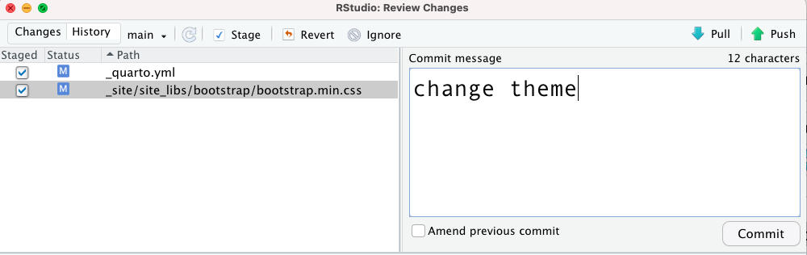
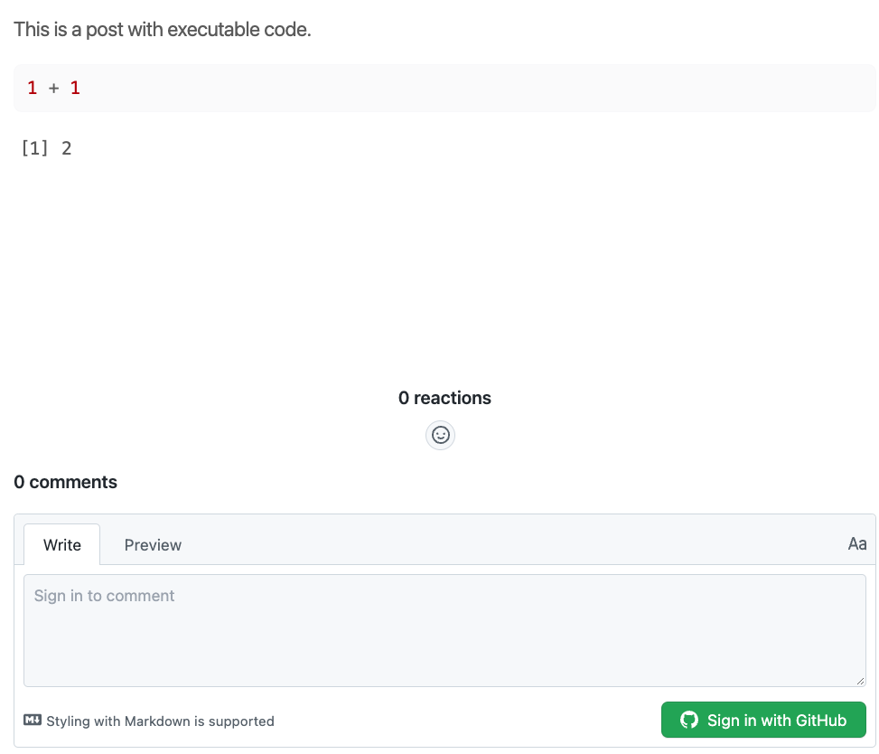

install.packages("usethis")Welcome!
Hi! Welcome to my new blog.
My name is Beatriz, and I have been writing blog posts about R and Data Science since 2019, in my blog written in Portuguese (I am Brazilian 🇧🇷). You can read more about me in the about page, and check my presentations on the talks page.
I think that some of the blog posts I write would be useful to a broader audience, so I wanted to start blogging in English (or translating blog posts that I wrote).
My blog in Portuguese was build using blogdown and Hugo Apéro, and I really like it. I searched if it was possible to adapt the blog that I had to a multi-language blog (so I could have posts in Portuguese, English and Spanish), but I had no success on my quest.
So, here comes Quarto…
I started using quarto in October 2021, and so far I have created websites and presentations with it (I even made a presentation about quarto using quarto). I was excited to test Quarto to create a blog sometime ago, but I really liked my blog with blogdown/Apéro.
So when I started thinking about writing blog posts in English, I thought that it would be a good idea to create a separate, brand new blog to store content in English, using Quarto.
My blog in Portuguese will continue to exist, and I will continue to post there (in Portuguese). In this blog, I’ll add content in English.
Now that I explained why this blog was created, I’m going to write about some of the steps that you need to take to create a blog with Quarto.
Tip
A lot of the steps that I explain in this post can be used to create other outputs with Quarto, such as websites, presentations, and books.
How to create a blog with Quarto?
1 - Open new tabs!
First of all: the Quarto team made a huge effort writing the documentation. I suggest that you open it in another tab, and use the Search button in the top-right of the docs page (believe me, the search feature used in Quarto is awesome!).

Second: I think it is nice to look at other blogs made with Quarto to see what you can do. I have not found a lot of blogs made with Quarto, and I think because it is a new software. So, take a look at these blogs:
Notes from a data witch: A data science blog by Danielle Navarro - Danielle is a data scientist and she has an awesome blog made with Quarto. The code used to create the blog is available on GitHub. But also don’t miss her art gallery!
This blog! Check other pages and see what you would like to have in your personal page. The code used to create this blog is available on GitHub.
2 - Install or update Quarto
I have been using Quarto for more than half a year now, so I had already installed Quarto.
But one thing that I do frequently is to update quarto. I recommend you do the same because if you use an older version, you might get a bug that has already been fixed.

3 - Create a project for the blog
I’m an RStudio IDE user, so I created a new RStudio Project using the interface:
- Click the
Project:button, and then inNew Project...:

- Choose
New Directory:

- Choose
Quarto blog:

- Choose the directory name (the name of the folder where your blog will be stored) and where in your computer you want to save it. Then click
Create Project:

- Voilá! The structure of your blog is ready 🎉. Check the
Filespanel and explore the files stored there.

4 - Preview your blog
You can preview how your blog is going to look like if you open an .qmd file and click the Render button. The preview of your blog will show on the Viewer Pane in the RStudio IDE.

But you can also click the Show in new window button (circled in red in the image above) to preview it in your browser:

Nice! Your blog exists on your computer now. But we still need to put it online, so other people can read your posts. In the next two sections I’ll show you how to do that!
5 - Create a GitHub repository
Using Git and GitHub will help you to put your blog online (and also have an online copy of the code in case anything happens with the version in your computer).
You need the package usethis for this part:
What is Git? GitHub? (Click to expand!)
If you have not used Git and GitHub with RStudio IDE before, I recommend you to take some time to prepare your environment and configure everything before continuing reading this post.
You can read detailed information about how to do this in the book Happy Git with R.
Here is a useful check-list you can use:
Install package usethis:
install.packages("usethis")Introduce yourself to Git:
usethis::use_git_config(
# your name
user.name = "Captain Marvel",
# your email used in your GitHub account
user.email = "awesomecaptain@gmail.com"
)Create a GitHub PAT Token with
usethis::create_github_token()(is like a password)Store your token with
gitcreds::gitcreds_set()Restart your R Session (usually
CTRL + SHIFT + F10will do the work)Use
usethis::git_sitrep()to check if your name, email and PAT are configured. The most important thing to look for is:Personal access token for 'https://github.com': '<discovered>'.
If it is all configured, you are ready to continue reading this post. 🚀
If you already configure Git and GitHub with RStudio IDE, you can use these two functions from the usethis package, in the project that you created:
use_git()to start the version control of your project (the function will ask you if you want to commit your changes and restart RStudio, you can accept it):
usethis::use_git()
# ✔ Setting active project to '/Users/Desktop/name-of-your-blog/'
# ✔ Initialising Git repo
# ✔ Adding '.Rproj.user', '.Rhistory', '.Rdata', '.httr-oauth', '.DS_Store' to '.gitignore'
# There are 8 uncommitted files:
# * '_quarto.yml'
# * '.gitignore'
# * 'about.qmd'
# * 'example-quarto-blog.Rproj'
# * 'index.qmd'
# * 'posts/'
# * 'profile.jpg'
# * 'styles.css'
# Is it ok to commit them?
#
# 1: Not now
# 2: Yup
# 3: Negative
#
# Selection: 2
# ✔ Adding files
# ✔ Making a commit with message 'Initial commit'
# • A restart of RStudio is required to activate the Git pane
# Restart now?
#
# 1: No way
# 2: Definitely
# 3: No
#
# Selection: 2use_github()to create a GitHub repository to store your code, and a new window will open with your repository:
usethis::use_github()
# ℹ Defaulting to 'https' Git protocol
# ✔ Setting active project to '/Users/beatrizmilz/Desktop/name-of-your-blog'
# ✔ Creating GitHub repository 'beatrizmilz/name-of-your-blog'
# ✔ Setting remote 'origin' to 'https://github.com/beatrizmilz/name-of-your-blog.git'
# ✔ Pushing 'main' branch to GitHub and setting 'origin/main' as upstream branch
# ✔ Opening URL 'https://github.com/beatrizmilz/name-of-your-blog'
This is the repository used in this example: https://github.com/beatrizmilz/name-of-your-blog
6 - Deploy with Netlify
Next, we will create a URL to put the blog online. This step is called deploy, and we will use a service called Netlify for this purpose.
First, Sign up or Log in on Netlify. I recommend signing in using your GitHub account.
Then, you can click Add new site and Import an existing project:

- Next, you need to connect to a Git provider. In this case, click the link to GitHub. It may ask you to authenticate with GitHub if you have not done this already.

- Then, in Pick a repository from GitHub, choose the repository that you created for your blog:

- This step is really important, so don’t hurry up and take your time to do it with care! In Import an existing project from a Git repository, you only have to change one thing: the Base directory field. You need to write the name of the directory used to store the HTML files of your blog. By default, it is
_site. This is because when you generate your blog, by default Quarto saves all the HTML files generated for your site in the directory called_site. Everything else will be filled out by Netlify, so don’t change anything else. Check if everything looks like the image below and then click Deploy site:

- When you first deploy a website on Netlify, it will show an automatic URL. In this case it was peppy-cat-2e067c.netlify.app. You can change it to a more personal URL, which would be easier for other people to type and remember. To change your site URL, click Site settings:

Then click Change site name:

And choose the name used for the URL of your blog, writing it on the field Site name. Below this field, you can see how the URL of your blog is going to look like! After choosing it, click Save. If you need, you can change it after.

Now the blog that I am creating as an example is available in this link: https://your-awesome-blog-with-quarto.netlify.app/
7 - Change the colors of your blog
You can change the colors, fonts and more of the style of your blog by changing the theme in the file _quarto.yml. You can create your own theme or choose between the options on the Quarto documentation.
Open the _quarto.yml file and choose another theme that you liked from the documentation. In this example, I changed the theme to minty:
format:
html:
theme: minty
css: styles.css
If you know CSS and would like to change the theme yourself, you can edit the styles.css file.
How can I update my blog with the changes I made? (Click to expand!)
If this is your first time using Git and GitHub in RStudio IDE, I’ll show you the steps to update your blog!
First, you need to find the Git Pane in RStudio IDE. If it is not there, I recommend restarting RStudio and opening your project again.
Then, in your Git Pane, the list of files with changes will appear. Check the boxes of the files that you want to update, and click Commit:
 Next, you need to write a message that, in a few words, explains what was changed. Write this message in the Commit message field, and the click Commit:
Next, you need to write a message that, in a few words, explains what was changed. Write this message in the Commit message field, and the click Commit:

Finally, close the Git window, then click Push (it is the green up-arrow button on the Git pane).

After all the changes are sent to GitHub, the Git Pane will be empty, meaning that there are no new changes:

Now, wait a minute and then check your blog online!
8 - Setting up Comments
It is nice to add a comments section on our blog posts, so people can write their opinion about it.
The quarto documentation explains how to add comments with three different options: Hypothes.is, Utterances and Giscus. You can use whatever suits you best.
I chose to use Giscus and here I’ll tell you how to set it up!
Your repository needs to be public on GitHub. The default is to be public, it will only be private if you changed it (you can change it back on your repository settings on GitHub).
Install the Giscus App. Go to this website and click the Install button:

Then, Giscus will ask you in which repositories you would like to give permission to Giscus. You can choose what you prefer. I chose to give access only to the repository that I’m going to need this service, so I chose Only select repository and pick the repository of the blog.

- You have to enable the Discussions in your repository. First, go to your repository, and click Settings:

Then, scroll down to the Features sections, and check the box of the Discussions.

- Open the
_quarto.ymlfile and add this code. Remember to update the information of your repo: in this example isbeatrizmilz/name-of-your-blogbecausebeatrizmilzis my GitHub account, andname-of-your-blogis the repository of this example blog.
comments:
giscus:
repo: YOURGITHUBACCOUNT/YOURREPORemember to commit all the changes before checking the online version! If you missed that, go back to the end of section 7 and read the collapsed tip.
Now we have a comments section on the blog! People need to log in with GitHub in order to write a comment or give a reaction:

Tip
When we activate the comments, as default they appear in almost every page! You can hide the comments in specific pages by adding comments: false in the YAML headers of *.qmd files that you want to hide.
9 - Add content in your blog
Your blog is live! Now you can make some changes and add your content in it. Here is a list of things that you might like to do!
_quarto.yml: In this file, you can do a lot of things, such as: changing the name that will appear in the blog, add links to your twitter and GitHub account, change the navigation bar options, and so on. You can check how I configured this in this file.Write about yourself, so people can get to know you. You can do that in the
about.qmdfile. There, you can add links to your social media, a photo, and other information about you that you think might be relevant. You can change the template of this page, in thetemplateoption. You can check all the templates in the Quarto documentation. In this personal blog, I chose to usetrestles.Write blog posts! Your blog posts are stored in the
posts/directory. Each post has to have a folder, and inside this folder you need aindex.qmdfile. But follow along the template that is already there and you will be good to go. Also, I recommend checking the awesome options described on the Quarto documentation.If you are out of ideas about what to write, my advice is to write something that you already know, want to learn, or something that you like a lot. I enjoy reading blog posts that people write about topics they are interested in!
10 - Tweet about it!
Congratulations, you have created your blog with Quarto! ✨
After writing your first blogpost, you can start sharing it to the world. 📢📢📢
My suggestion to you is: Write a tweet! You can use the #rstats hashtag if the content of your blog is about R and you can cite @quarto_pub.
If this post was relevant to you, you can also cite me with @BeaMilz, so I can retweet about your blog!
Conclusion
To me, a person who is used to using blogdown, Quarto is an awesome tool, has simple code and is full of great documentation. I also think that the experience is similar to using Distill.
I hope this content was useful and that you enjoy the reading. Please let me know in the comments if there is anything that is not clear!
Thanks!
Thanks for reading this post, and now I would like to thank awesome people that, without their work, this post would not exist:
The team that developed Quarto (here and here). They continue to improve it, they answer questions on the Discussions, and they wrote that AWESOME DOCUMENTATION! 🏆
Alison Hill - she is an important part of the R and R-Ladies community, and she wrote tons of content about writing blogs with R. I have been learning from her material since 2018 (when I started to create my blog in Portuguese). A lot of what I know about creating blogs with R, I learned from her materials and talks. Thanks Alison 💜.
Julio Trecenti is my partner. We talk about Quarto a lot, and I learn so much from him. Apart from that, I would like to thank him for reviewing my content and always supporting me ❤️.